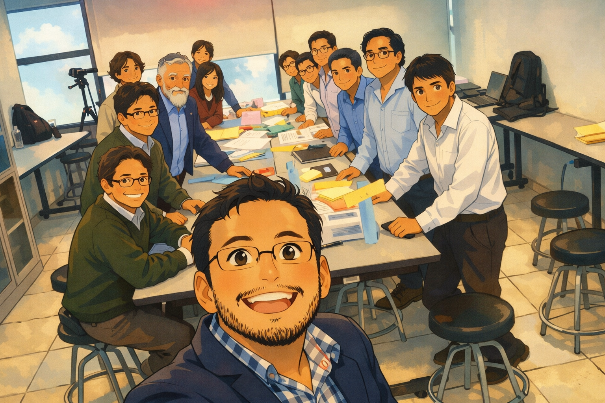
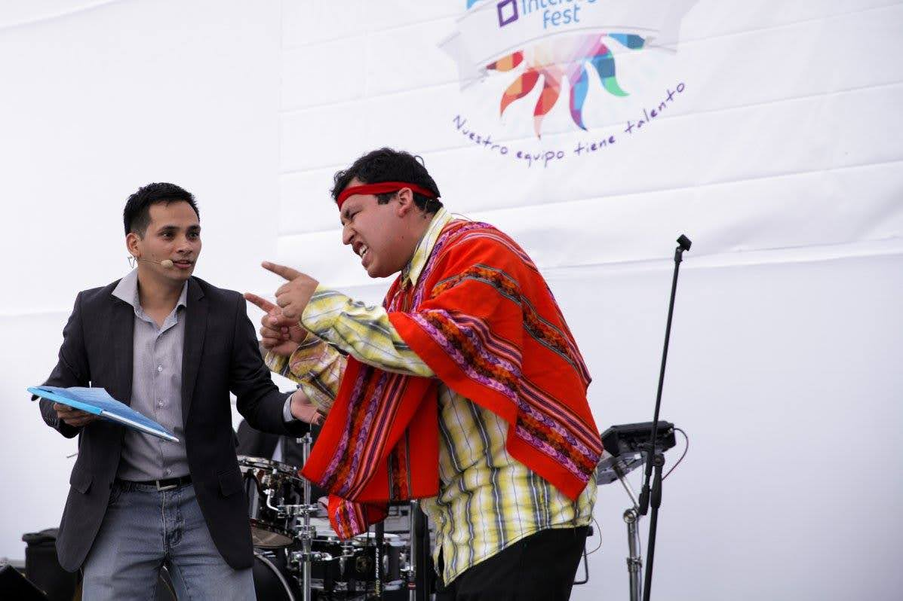

Engineering Manager · Tech Lead · Enterprise Architect
14 años liderando iniciativas de automatización, arquitectura empresarial y transformación digital en el sector financiero y de salud. Hablo con el CEO el lunes y reviso código el martes.
Disponible para: Consultoría · Proyectos · Workshops · Docencia
Ubicación: Lima, Perú
Empresas e instituciones con las que he trabajado
No solo entrego proyectos — entrego impacto.
gestionados en producción con SLA garantizado
proceso crítico de 10 horas reducido a 15 minutos en .NET
en equipos de desarrollo liderados como Tech Lead
legacy eliminados, reduciendo costos y riesgo operacional
proyecto liderado como Engineering Manager en AUNA
reducción en tiempo de priorización de iniciativas
Soy Engineering Manager y Arquitecto Empresarial con experiencia comprobada en banca, seguros y salud. No solo diseño arquitecturas — las implemento, lidero al equipo y mido el impacto. Conecto la visión del negocio con la ejecución técnica: hablo el idioma del CEO y el del desarrollador.
Mi enfoque combina liderazgo técnico, transformación de procesos y mentalidad ágil. Si necesitas a alguien que entienda el problema de fondo antes de proponer una solución, llegaste al lugar correcto.
Además de mi faceta técnica, creo que el conocimiento, el arte y la creatividad son pilares del crecimiento personal. Por eso desarrollo distintas dimensiones que enriquecen mi manera de liderar y comunicar:
Educación, arte y tecnología conviven en mi trayectoria.

Mi Company One: el paraguas bajo el cual ofrezco consultoría, desarrollo de software, cursos y servicios de automatización e IA. Próximamente, sitio dedicado.
Cursos en IDAT, ZEGEL, IN Learning y Fenix Academy sobre automatización, IA, Scrum y desarrollo. +30 alumnos capacitados.

Creador de El Show del Cutervino, espectáculo de humor, imitaciones y reflexiones para eventos culturales y empresariales.
Autor bajo el seudónimo El Poeta del Ilucán con 18 libros publicados sobre amor, liderazgo, tecnología y crecimiento personal.
.NET / C#, PHP, Java, VB.NET, SQL Server, REST APIs, Microservicios, Web Apps, Reporting Services
Automation Anywhere, Make, n8n, Automy, Workato, Google App Script, RPA, Bots en producción
C4 Model, Arquitectura Empresarial, Inventario TI, Modernización de sistemas, Diseño E2E
Azure Cloud, Google Cloud Platform, AWS, Migración, CI/CD, DevOps, Infraestructura
Scrum, Kanban, SAFe, Agile Coach, Product Ownership, OKRs, Facilitación
IA Generativa aplicada, Agentes IA, Automatización cognitiva, ChatGPT, Looker Studio, Power BI
Lideré el proyecto Laboratorio Web Empresas 2.0 (presupuesto $500K), integrando pasarela de pago Niubiz, Core de Laboratorio Enterprise Lis y facturación SAP. Gestiono el POD Evolution, reduciendo deuda técnica y generando métricas de respuesta óptimas para el Digital de Auna.
Lideré el área de TI, implementé automatizaciones RPA y low-code, garantizando la continuidad operativa y modernizando flujos institucionales.
Lideré el Squad de Automatización con 102 bots en producción. Definí el roadmap de automatización por ROI, aseguré SLA de disponibilidad y generé eficiencias sostenidas en múltiples líneas de negocio.
Enlace clave entre negocio y tecnología. Fomentó la reutilización de APIs, reduciendo tiempos y costos de implementación en nuevas iniciativas de transformación digital.
Lideré técnicamente 4 squads, incrementando la eficiencia en +30% y reduciendo el tiempo de priorización de iniciativas de 3 meses a 15 días.
Primer Arquitecto Empresarial de la compañía. Diseñé arquitecturas E2E con C4 Model, eliminé +30 sistemas obsoletos y establecí el gobierno tecnológico institucional.
Desarrollé sistemas críticos de rentas vitalicias. Migré un proceso batch de 10 horas a 15 minutos (-97%) usando .NET multihilo. Creé el primer BI institucional (BI Salomón).
Gestión de 102 bots en producción, roadmap de automatización por ROI e integraciones complejas con Automation Anywhere, Workato y Make.
Primer AE en Interseguro: Journey to Cloud, eliminación de 30+ sistemas, inventario TI corporativo y arquitecturas E2E con C4 Model.
Proyecto .NET crítico: reducción de 10h a 15min (-97%). Web apps escalables, sistemas de rentas vitalicias y primer BI institucional.
Proyecto de $500K integrando Niubiz, Enterprise Lis y SAP para ofrecer servicios de laboratorio online de alto impacto.
4 squads multidisciplinarios liderados, +30% eficiencia, tiempo de priorización reducido de 3 meses a 15 días.
Cursos en IDAT, ZEGEL, IN Learning y Fenix Academy. Webinars para +30 alumnos. 18 libros publicados.
Formación práctica dictada también en IDAT, ZEGEL e IN Learning.
Funciones, automatización de reportes y dashboards para el trabajo del día a día.
Ver cursoGoogle App Script, Make y n8n para automatizar tareas y ahorrar tiempo.
Ver cursoChatGPT, agentes IA y herramientas generativas para el trabajo moderno.
Ver cursoIntroducción práctica a la programación, pensamiento lógico y mini-proyectos.
Ver cursoAutomatiza Google Workspace con scripts, dashboards y formularios conectados.
Ver cursoMarco ágil completo: roles, ceremonias y casos reales de equipos.
Ver cursoArquitectura serverless con AWS Lambda y despliegues en la nube.
Ver curso¿Tienes un reto tecnológico? Hablemos.
RPA, integraciones y agentes IA para reducir trabajo manual y escalar operaciones.
Diseño de soluciones E2E, inventario TI, C4 Model y modernización de sistemas legacy.
Aplicaciones .NET, web y sistemas críticos adaptados a los procesos de tu organización.
Journey to Cloud, Azure y GCP: estrategia, arquitectura e implementación.
Workshops y cursos en tecnología, automatización, agilidad e IA para equipos empresariales.
Implementación de Scrum / Kanban, formación de squads y mejora continua orientada a resultados.
¿Tienes un proyecto de automatización, arquitectura o capacitación?
Escríbeme y lo conversamos sin compromiso.
Conéctate conmigo